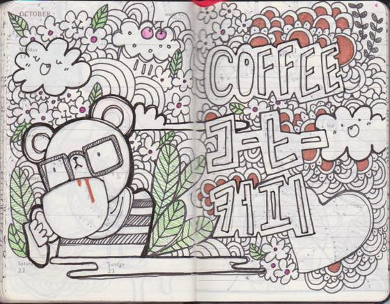

주말엔 잉여롭게 커피숍에서 끄작거리는게 낙입니다.
몰스킨 위클리 스케쥴러를 구입해서 스케치북으로 쓰고있는데 슬슬 끝이보이네용.
뭐를 끝까지 해본일이 손에 꼽는 인간으로서 매우 감격스럽습니다 ^^;;;; 페이지 마지막장까지 완성하면 케키사다가 자축이라도 해야겠어요 ㅋㅋㅋ
오늘도 라디오 들으면서 카페서 끄작거리고 있는데 옆자리 여자분이 계속 쳐다보시다가 내그림이 마음에 든다며 어디서 아이디어를 얻냐고 묻는걸 시작으로 대화를 하게되었습니다. 자신도 패턴디자인으로 한다면서 작업물을 사진으로 찍은걸 보여주면서요 :3
그냥 그때그때 그리고 싶은 메인테마를 정해 큰 덩어리를 그린다음 나머지 빈공간을 패턴이나 작은 아이템으로 꾸악꾸악 채워나간다고 설명하니 재미있다면서 자기 주변에 그림그리는 사람이 잘 없는데 이렇게 만나게 되어서 반갑다고 하더군욤.
인스타랑 페이스북 주소 교환하고 서로의 작업물을 보여주면서 한참 수다를 떨었습니다.
이르케 뜻밖의 만남도 좋네용. ^^***
그림그리고 디자인하는게 직업이 된 이후 그림그리는게 대따 재밌다 - 라는 생각을 하게된게 정말 오랜만인거 같아 요즘 꽤나 즐기고 있습니다.
아무런 부담없이 슥슥 그려나가는게 늠 좋네용. 희희